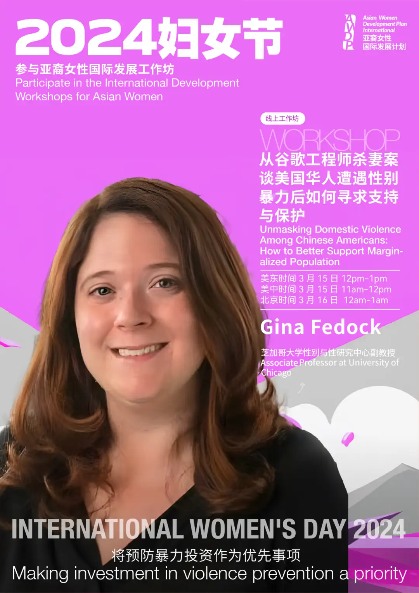

联合国2024年国际妇女节的主题是“投资于妇女：加速进步”。到2030年，促进性别平等措施的年度赤字将高达3600亿美元，推动性别平等融资刻不容缓。
在联合国2023年制止暴力侵害妇女行为国际日“16日行动”期间，我们举办了5场线上工作坊，与超过300名观众讨论了“性别视角下的职业病”等议题；而2024年妇女节主题与2023年制止暴力侵害妇女行为国际日的主题一脉相承，都是“通过提供充足资金，消除性别暴力”。如果不大力投资解决暴力侵害妇女和女童行为、扩大预防方案并实施有效政策，各国将无法在2030年之前消除性别暴力。
今年，AWDPI亚裔女性国际发展计划将在国际妇女节和妇女月期间带来横跨中国、德国厄瓜多尔和美国的6场工作坊，与各国关注性别议题的人们共同表达对性别暴力幸存者的支持。
# 本期工作坊

2024年1月16日，谷歌工程师陈某某在位于加州硅谷的家中被捕。当警方赶到时，其妻子于某已经身亡。经调查，陈某某于前一晚用拳头连续殴打妻子于某头部致其死亡。
这起震惊华人社会的家暴案件再次揭开了美国千万华人家庭中血淋淋的一角。在就业、种族、性别歧视等重重压迫之下，还有更多有语言障碍、受教育程度低、残疾以及年迈的华人女性长期遭受着亲密关系暴力带来的痛苦。
在本次工作坊，AWDPI邀请到了芝加哥大学性别与性研究中心副教授吉娜，我们将以美国谷歌工程师杀妻案作为切入点探究家庭暴力，性别暴力的定义，了解华人女性在受暴力后对身体和心理健康的影响，讨论对种族和移民身份的歧视在她们寻求帮助的影响，以及这种歧视对整个社区的影响，最后我们将探讨如何更好支持性别暴力求助者。
Unmasking Domestic Violence Among Chinese Americans: How to Better Support Marginalized Population
On January 16th, 2024, Google software engineer Liren Chen was arrested under domestic abuse and first-degree murder in his house in Santa Clara, CA. He was accused of beating his wife to death in their home in Santa Clara, California. Chen had admitted to punching Yu on her head until her last breath and ultimately causing her fatal death during the instigation.
Chen and Yu had everything any immigrant to the U.S. could ever wish for – a master’s degree from an internationally renowned institution, a top-tier job with a decent salary at Google, and a long-term relationship that dated back to their undergraduate days.
For many, it is hard to believe domestic violence could have happened in today’s society, let alone in a family like this.The truth is that there are even many more undereducated, non-English speaking, disabled, and/or elderly Chinese women struggling under the double oppression of intimate relationship violence and economic, racial and gender discrimination.
As we celebrate International Women’s Day and Women’s History Month, AWDPI has invited Associate Professor Gina at the University of Chicago, Crown Family School of Social Work, Policy and Practice. We will use the Google engineer murder case as a starting point to explore the definitions of domestic violence and gender-based violence. We aim to understand the impact of violence on physical and psychological health, discuss how discrimination based on race and immigration status can have significant impacts on individuals' willingness and ability to seek help, and explore how such discrimination affects the community in the long run. Finally, we will discuss how to better support survivors of gender-based violence.
嘉宾信息：
Gina Fedock, PhD
芝加哥大学社会工作与政策学院教授 主攻性别暴力研究
#如何参与
会议号：
Zoom: 319 708 3057
活动时间：
美东时间 3月15日 12pm-1pm
美中时间 3月15日 11am-12pm
北京时间 3月16日 12am-1am
#活动社群
撰文｜石瞰 吴天天
设计｜Kylan
排版/封面｜游舸